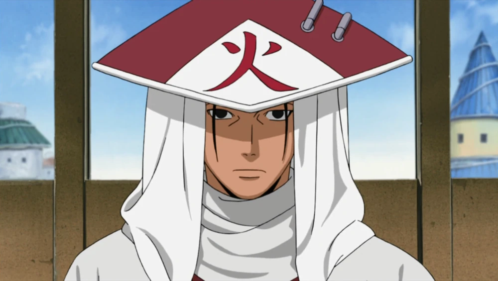
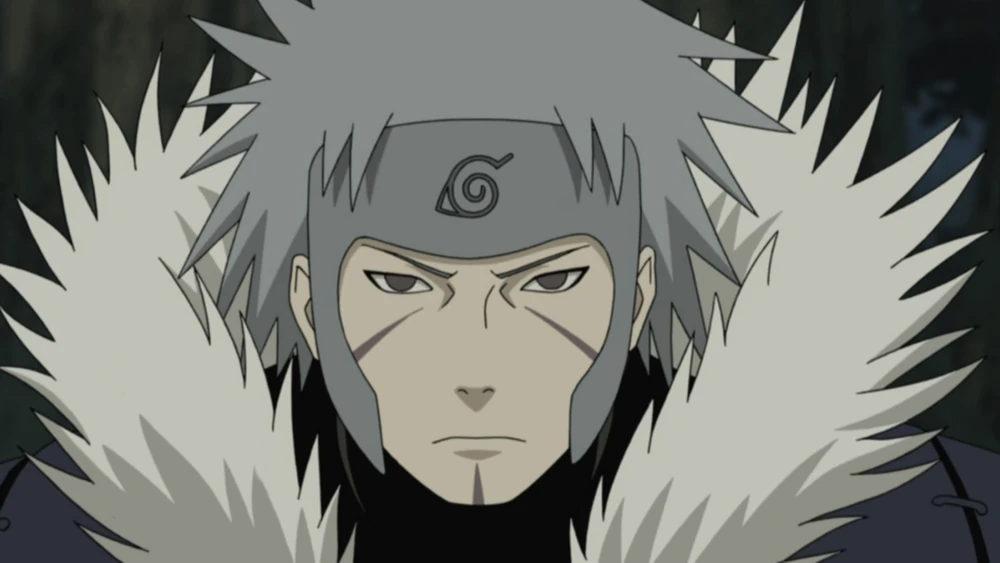
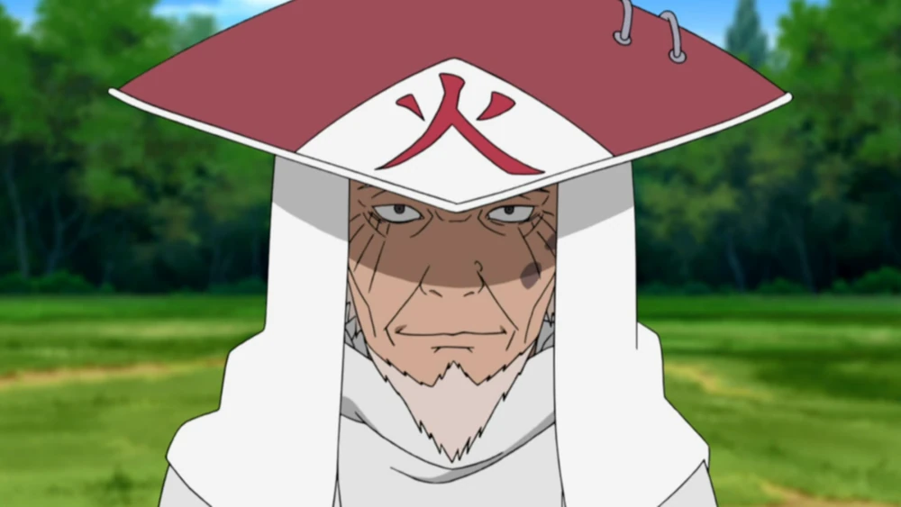
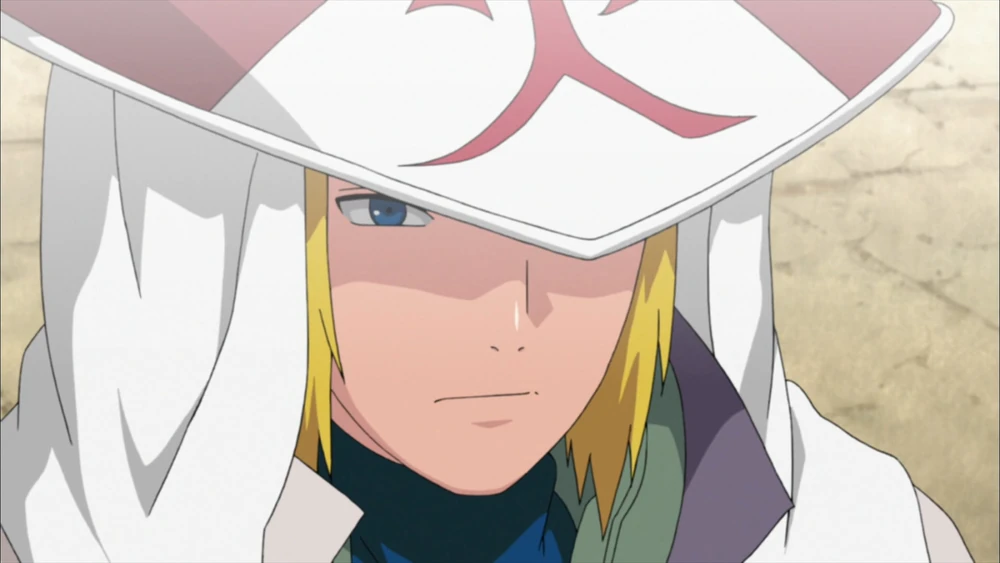
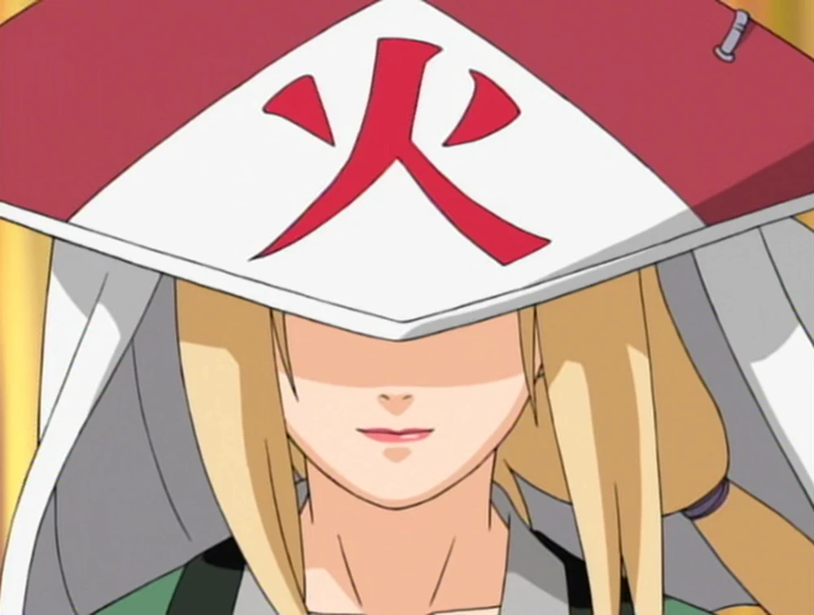
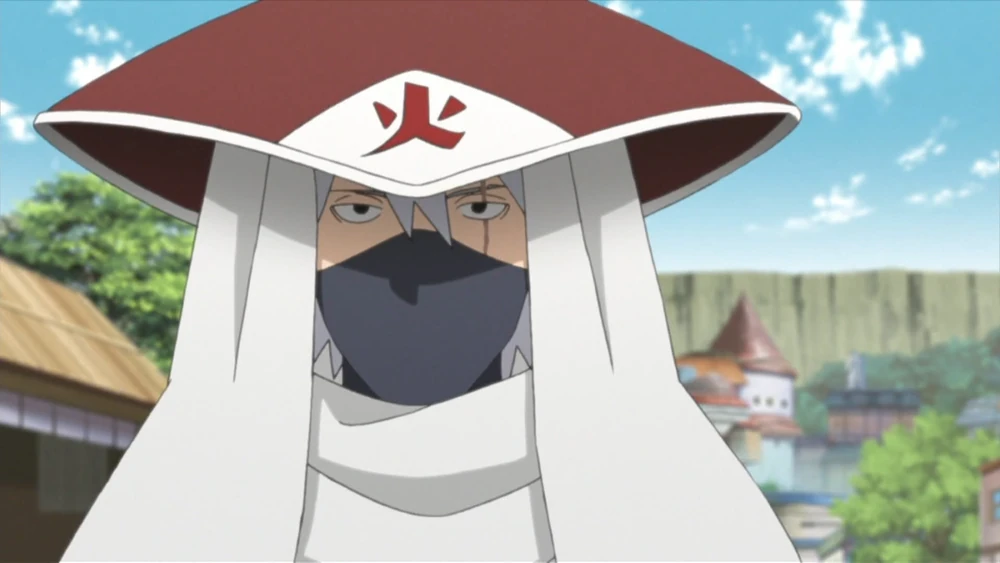
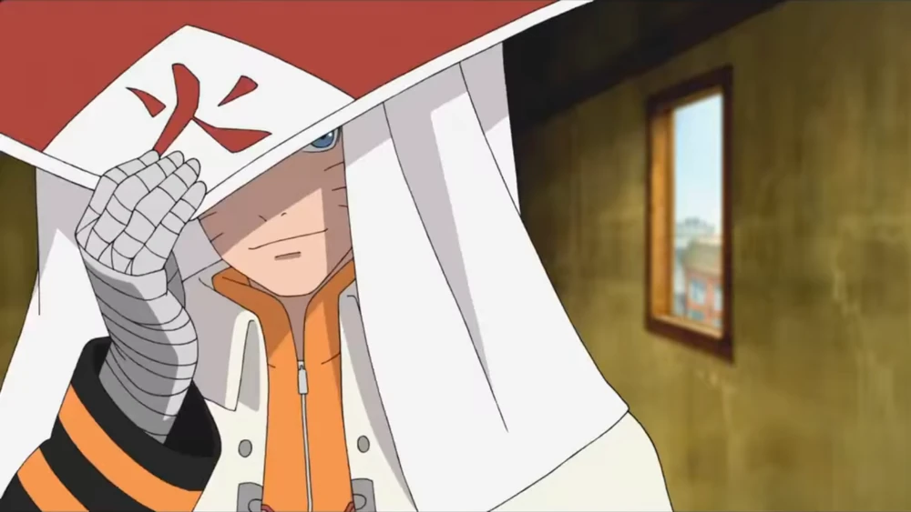

Hokages
1º Hokage: Hashirama Senju

Conhecido como o "Deus Shinobi", Hashirama foi o fundador de Konoha ao lado de Madara Uchiha. Usuário único da Liberação de Madeira (Mokuton), ele possuía uma força monumental e uma filosofia pacífica conhecida como a Vontade do Fogo, que serviu de base moral para todas as gerações futuras de ninjas.
2º Hokage: Tobirama Senju

Irmão mais novo de Hashirama, Tobirama foi o grande construtor da infraestrutura política e social de Konoha, criando a Academia Ninja, o Exame Chunin e a Força Policial. Um estrategista frio e gênio do elemento Água (Suiton), ele também foi o inventor de jutsus lendários, como o Clone das Sombras e o Deus Voador do Trovão.
3º Hokage: Hiruzen Sarutobi

Apelidado de "O Professor" devido ao seu vasto conhecimento de praticamente todos os jutsus existentes na vila, Hiruzen governou Konoha pelo período mais longo. Ele liderou a vila através de grandes guerras mundiais ninjas e foi o mentor dos Três Sannin Lendários (Jiraiya, Tsunade e Orochimaru), sendo lembrado por seu espírito paternal.
4º Hokage: Minato Namikaze

O "Relâmpago Amarelo de Konoha" ganhou fama internacional por sua velocidade incomparável e pelo desenvolvimento do Rasengan. Seu governo foi tragicamente curto, pois ele sacrificou a própria vida para selar a Raposa de Nove Caudas (Kurama) dentro de seu filho recém-nascido, Naruto, salvando a vila da destruição total.
5ª Hokage: Tsunade Senju

Neta de Hashirama e a primeira mulher a assumir o posto, Tsunade é considerada a maior ninja médica de todos os tempos. Ela assumiu a liderança em um momento de profunda crise após a morte de Hiruzen, revolucionando o sistema de saúde ninja e usando sua força bruta e habilidades de cura para proteger a população durante a invasão de Pain.
6º Hokage: Kakashi Hatake

O lendário "Ninja Copiador" assumiu o chapéu de Hokage após a Quarta Guerra Mundial Shinobi. Mesmo sem o Sharingan, Kakashi usou sua genialidade tática, diplomacia e vasta experiência para liderar Konoha em um período de intensa reconstrução e transição tecnológica, pavimentando o caminho para a era moderna de paz.
7º Hokage: Naruto Uzumaki

O grande herói da Quarta Guerra Mundial Shinobi realizou o sonho de sua infância ao se tornar o Sétimo Hokage. Carregando o poder de todas as Bestas com Cauda e uma determinação inabalável, Naruto transformou Konoha em uma metrópole tecnológica e expandiu a paz global, unindo as cinco grandes nações ninja como nunca antes na história.